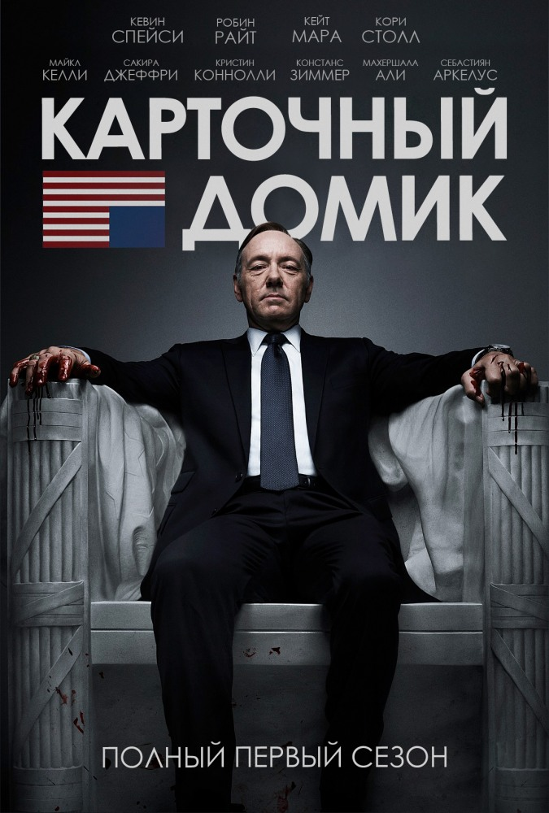
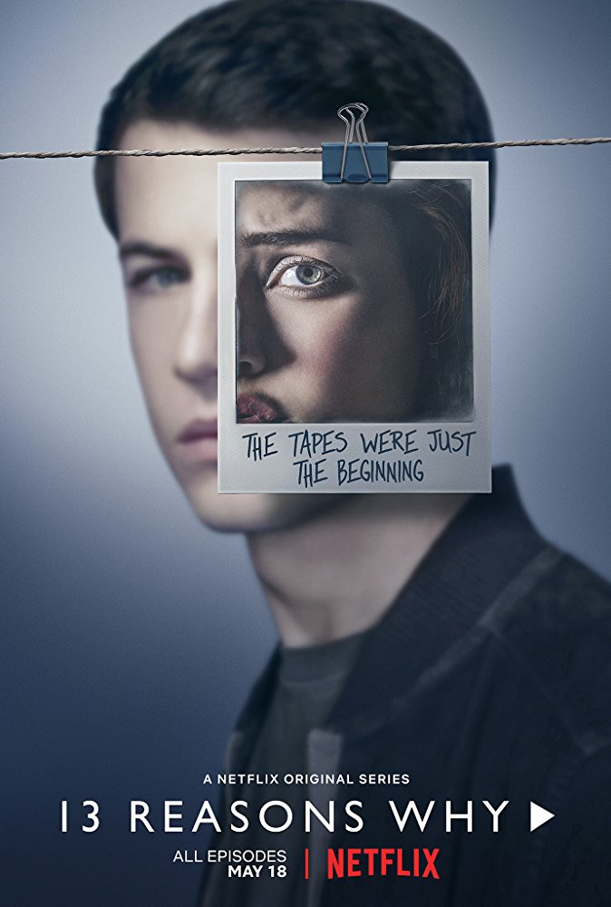
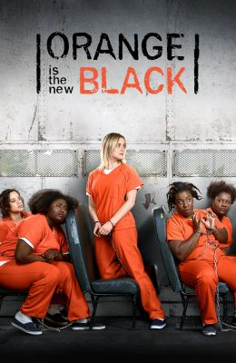
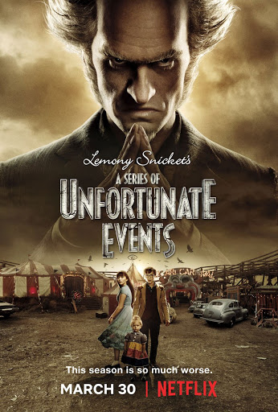
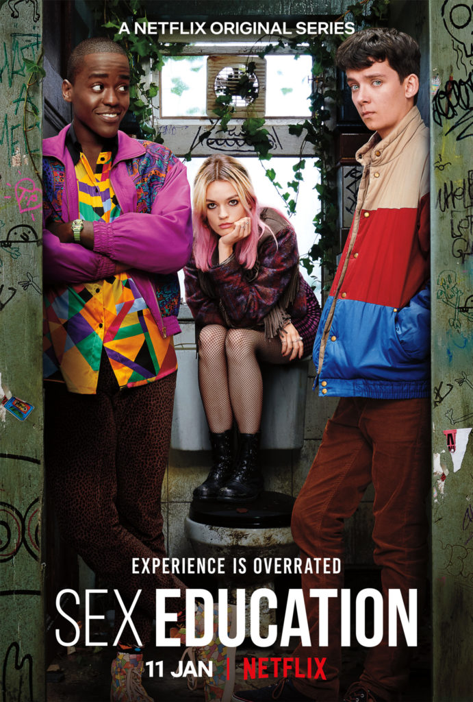

Топ 5 лучших сериалов:

Количество эпизодов: 73 (6 сезонов, хронометраж серии: 50 минут)
Жанр: политический триллер
Создатель: Бо Уиллимон («Мартовские иды»)
В главных ролях: Робин Райт, Майкл Келли,Кевин Спейси, Махершала Али,
Амбициозный конгрессмен от Демократической партии Фрэнк Андервуд в обмен на обещание сделать его госсекретарём помогает Гаррету Уокеру стать президентом США. Однако после выборов глава администрации президента Линда Васкез сообщает Андервуду, что он не получит должность.

Количество эпизодов: 36 (3 сезона, хронометраж серии: 60 минут)
Жанр: драма
Создатели:: Брайан Йорки, Джей Эшер (автор романа)
Однажды Клэй Дженсен находит на пороге своего дома коробку с аудиокассетами, записанными Ханной Бейкер. Он был влюблен в эту девушку в школе, пока она однажды не покончила жизнь самоубийством. В своих записях Ханна указала 13 причин, которые толкнули её на это. И Клэй - одна из них. Действия происходят в школе Либерти. Новая ученица – Ханна Бейкер – покончила с собой, это событие станет центральной линией первого сезона.

Количество эпизодов: 91 (7 сезонов, хронометраж серии: 50 минут)
Жанр: драма, комедия (это не ситком, никакого легкого юмора и абсурда. И вообще смешного — не так много)
Режиссёр: Дин ДеБлуа, Крис Сандерс
В ролях: Тейлор Шиллинг, Лора Припон, Мишель Херст, Майкл Джей Харни
Пайпер Чапман отправляется в тюрьму на пятнадцать месяцев. Причина — десять лет назад девушка помогла своей бывшей любовнице с контрабандой наркотиков. Юношеская глупость дает о себе знать в самый неподходящий момент, когда у Пайпер новая счастливая жизнь.

Количество эпизодов: 25 (3 сезона, хронометраж серии: 50 минут)
Жанр: черная комедия, приключения, драма, триллер
Режиссёр: Томм Мур
В ролях: Нил Патрик Харрис, Малина Вайсман, Луис Хайнс, Пресли Смит
Детей отправляют под опеку дальнего родственника — эпатажного и чокнутого графа Олафа. Жизнь детей превращается в кошмар: Олаф не только заставляет сирот обслуживать огромный полуразвалившийся дом, но и шантажом, обманом и угрозами пытается завладеть богатством их родителей.

Количество эпизодов: 16 (2 сезона, хронометраж серии: 45 минут)
Жанр: комедия, подростковая драма
Режиссёр: Лори Нанн
В ролях: Эйса Баттерфилд, Эмма Маккей, Джулиан Андерсон, Ншути Гатва
Отис — тихий скромный тинейджер. Но судьба сталкивает героя с Мэйв — начитанной неформалкой, живущей в трейлере в полнейшем одиночестве. Девушке очень нужны деньги, и ее блестящий ум быстро генерирует идею стартапа: Отис банально умеет слушать и видеть связь между комплексами, семейным бэкграундом и постельными трудностями сверстников.